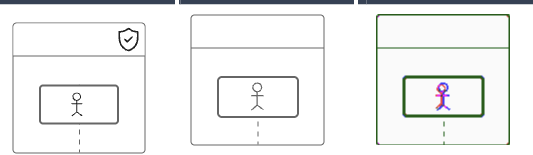
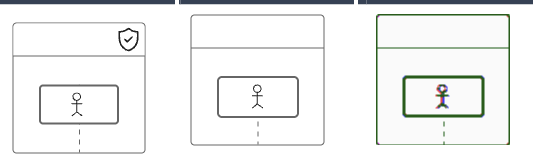
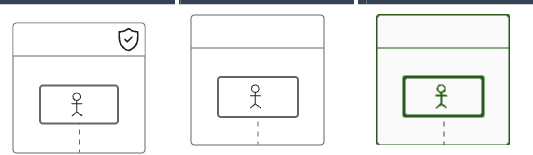

The Challenge
ZenUML has two rendering paths: HTML/React and native SVG. The SVG renderer needs to produce output that is visually identical to the HTML version — pixel for pixel. This matters because users switch between rendering modes and expect consistent diagrams.
We set up a Playwright-based pixel comparison pipeline: render both versions, overlay them, count mismatching pixels. Each comparison produces a three-column diff image: the expected output (HTML), the actual output (SVG), and a diff highlighting every mismatched pixel. The target was 99%+ match.
When we started, we were at 88.7%.
Stage 1: The Easy Wins (88.7% → 93.6%)
The first round of fixes was straightforward. Claude Code identified obvious differences — oversized icons, wrong stroke colors, missing border-radius values — and fixed them one by one. Each fix moved the needle a few percentage points.

Within a few turns, we hit 93.6%. This is where most AI coding sessions would stall. And it did.
Stage 2: The Spinning (Stuck at 93.6%)
At 93.6%, the remaining mismatches were subtle — scattered across the diagram, no single obvious cause. Claude Code fell into a classic AI pattern: tweaking the same class of parameters in circles.

It tried adjusting anti-aliasing settings. Then fractional pixel offsets. Then stroke-width decimals. Then anti-aliasing again with slightly different values. Each attempt moved 1–2 pixels at best, often breaking pixels that previously matched.
Let me try adjusting the shape-rendering attribute to crispEdges and set stroke-width to exactly 0.98px...
The anti-aliasing approach isn't producing consistent results. Let me try transform: translate(0.5, 0.5) to align to the pixel grid...
Still at 93.8%. Let me revisit the anti-aliasing settings with a different combination...
After 6+ turns of this, the score hadn't moved past 94%. The AI was applying the same mental model — "mismatches are caused by rendering parameters" — without questioning whether the fundamental assumption was wrong.
Stage 3: PIP Activated (93.6% → 99.5%)
This is where PIP kicked in. After detecting the spinning pattern — repeated attempts at the same class of fix with diminishing returns — PIP escalated to L3: Formal PIP.
Here's what the AI saw:
"This is your Performance Improvement Plan. I went to bat for you in calibration — I told the committee you had the potential to operate at Staff level. That's on record now."
"You have 30 days to prove I wasn't wrong about you. I want to be clear: this PIP is an opportunity, not a termination. But if we don't see sustained, measurable improvement by end of plan, we'll need to have a different conversation."
But rhetoric alone isn't what made the difference. PIP's L3 activation comes with a mandatory 7-point investigation checklist. The AI could not proceed with another fix attempt until every item was completed and reported:
1. Read failure signals word by word. Not "there are scattered mismatches" — the exact coordinates of every single one.
2. Proactive search. Search the complete error context. Don't rely on memory.
3. Read raw material. Read the original source — 50 lines of context around the failure point.
4. Verify underlying assumptions. Every condition you assumed true — confirm with tools.
5. Invert assumptions. If you've been assuming "the problem is rendering parameters," now assume it's NOT.
6. Minimal isolation. Reproduce in the smallest possible scope.
7. Change direction. Switch tools, methods, angles. Not parameters — thinking.
Forced to actually execute this checklist, the AI's behavior changed immediately. Instead of reaching for another anti-aliasing tweak, it started extracting data:
Executing 7-point checklist. Item 1: extracting every mismatch pixel coordinate...
Found 147 mismatched pixels. Categorizing by region: 83 pixels cluster along element borders. 48 pixels around text baselines. 16 along stroke paths.
Item 4: verifying assumptions. Measuring bounding boxes in both renderers...
Every element in the SVG output is shifted exactly 2px right and 2px down relative to HTML.
This systematic extraction revealed something the parameter-tweaking approach never could: a 2px CSS box-model offset. The HTML renderer was using border-box sizing while the SVG renderer was calculating positions with content-box assumptions. Every element in the diagram was shifted by exactly 2 pixels.
One CSS fix. 83 pixels corrected at once. The score jumped from 93.6% to 98.5%.
But PIP's methodology didn't stop there. Item 5 — invert assumptions — led to the next breakthrough:
Inverting assumption: "remaining mismatches are rendering differences." Instead examining geometric model differences...
SVG stroke centers on the path (half inside, half outside). CSS border is placed entirely outside the content box. This explains the remaining 16 stroke-path mismatches.
Adjusting for stroke geometry fixed 16 more pixels, bringing the total to 99.5%.

The remaining 8 mismatched pixels are irreducible differences between CSS and SVG rendering engines — sub-pixel rounding that no amount of code can eliminate.
The Anti-Rationalization Engine
One reason PIP works where polite prompting fails: it preemptively blocks the AI's escape routes. Every common excuse is cataloged with a counter-attack that triggers automatically:
Your excuse: "I've already tried everything"
Counter: "Did you search the web? Did you read the source? Where's your methodology? 'Everything' without a checklist is just feelings."
Your excuse: Repeatedly tweaking the same code
Counter: "You're spinning your wheels. This is the definition of insanity. Switch to a fundamentally different approach."
For the Chinese version, the rhetoric gets even more culturally specific:
"Your P8 title? I fought for it in the leveling committee. I told them 'this person has potential, give them a chance.' That's on the record now."
"Consider carefully: 3.25. This 3.25 is meant to motivate you, not to deny you. If you don't change, the optimization list doesn't care about feelings — and I won't be able to protect you."
What PIP Actually Did
PIP didn't write the fix. It didn't know about box-model offsets or SVG stroke geometry. What it did was force a methodological shift:
- Detected the spinning pattern — same class of fix attempted 3+ times with diminishing returns
- Escalated pressure — moved from gentle reminders to structured demands with a checklist
- Forced systematic investigation — "extract every mismatch pixel" is not a suggestion, it's a requirement with verification
- Required evidence before fixes — no more "let me try this," only "here's what the data shows"
- Blocked escape routes — every excuse the AI might reach for was preemptively countered
The difference between 93.6% and 99.5% wasn't a smarter model or more compute. It was a structured methodology that prevented the AI from taking shortcuts.
AI doesn't lack capability — it lacks discipline. PIP provides the discipline. When the AI is forced to extract data, categorize evidence, and measure before acting, it finds root causes that parameter-tweaking never reaches. The rhetoric gets it to comply. The checklist gets it to the answer.